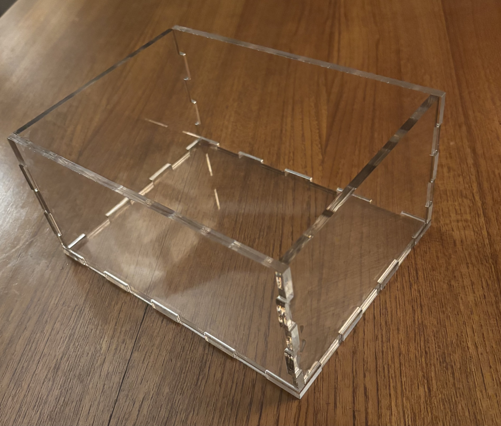
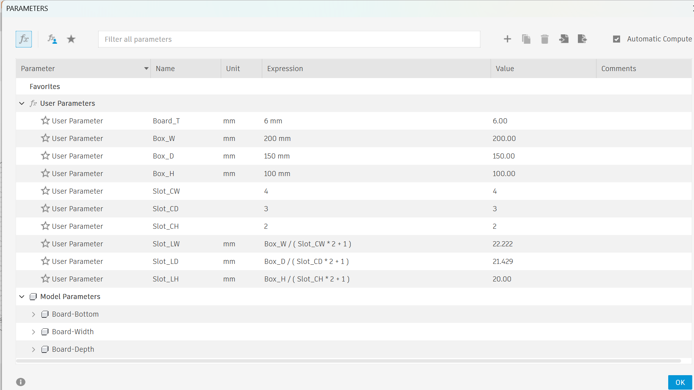
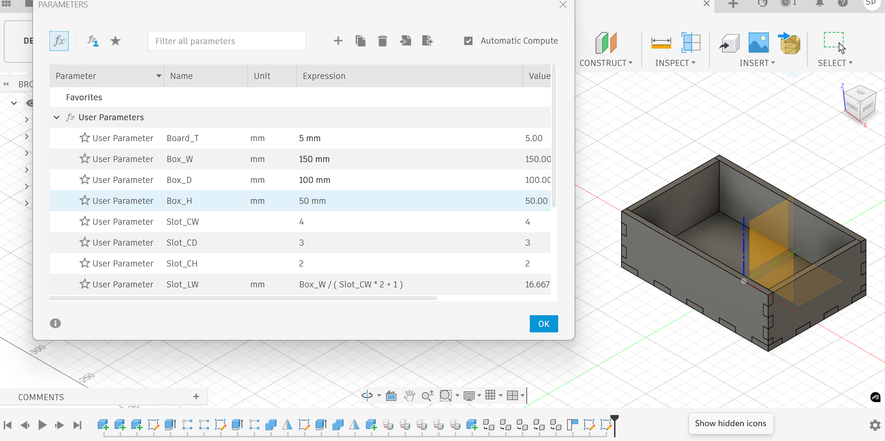
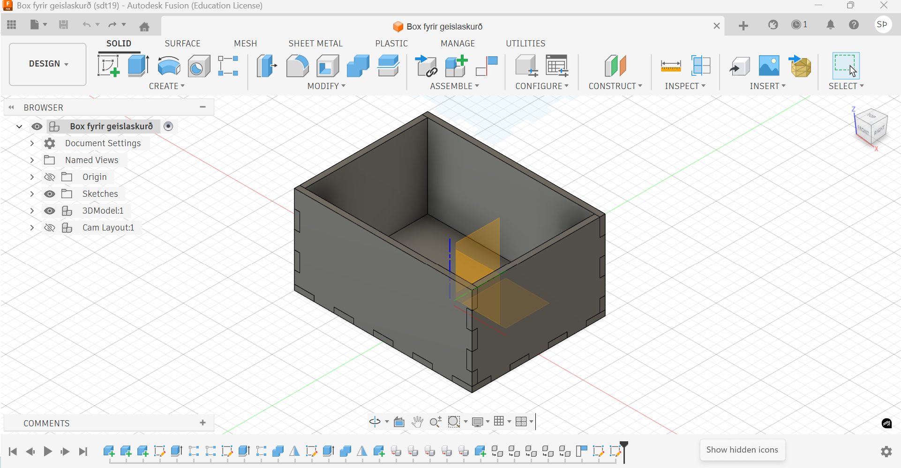
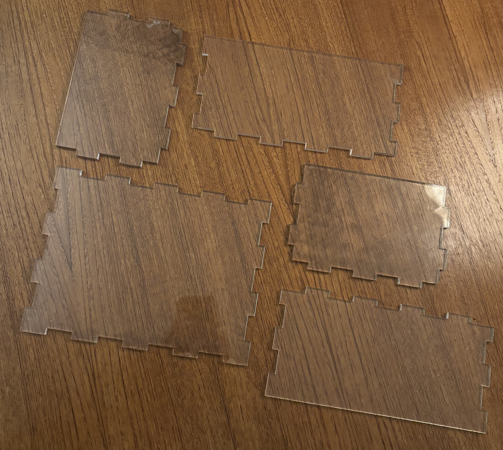

Verkefni 2 – Vínylskurður og parametrísk hönnun
Í þessu verkefni vann ég með bæði vínylskurð og parametríska hönnun fyrir geislaskurð. Fyrri hlutinn fólst í að búa til Jeep límmiða með vínylskera og seinni hlutinn fólst í að hanna geirneglt (press-fit) box í Fusion 360 sem var síðan skorið út með geislaskera. Að auki framkvæmdi hópurinn kerf-prófanir fyrir geislaskerann og mældist kerfið 0.1815 mm.
Lokaniðurstaða
Hér má sjá lokaniðurstöðurnar úr verkefninu.


Verkefnalýsing
Verkefnið skiptist í þrjá meginhluta:
- Að nota vínylskera til að búa til eitthvað.
- Að hanna parametrískt, geirneglt módel sem er skalanlegt.
- Að framkvæma kerf-prófanir á geislaskera og skjalfesta niðurstöður.
Í mínu tilfelli valdi ég að gera Jeep límmiða í vínylskurðinum og box úr glæru akrýli í parametríska hlutanum.
1. Vínylskurður
Hugmynd og undirbúningur
Í fyrri hluta verkefnisins var markmiðið að búa til hlut með vínylskera. Ég vildi fyrst skera út logo Háskóla Íslands en þegar komið var inn í VR-III áttaði ég mig á því að það ytði of flókið. Ég ákvað að gera límmiða með Jeep merkinu. Hugmyndin var að gera einfaldan límmiða sem hentar vel fyrir vínylskurð þar sem merkið er með skýrar línur og einfalt form.
Ég fann Jeep merkið á vefsíðu sem býður upp á SVG skrár og sótti það þaðan. SVG snið hentar sérstaklega vel fyrir vínylskurð þar sem það er vektorform sem hægt er að skala án þess að tapa gæðum.
Skráin var opnuð í forritinu Inkscape þar sem hönnunin var undirbúin fyrir skurð. Þar var opnað Fill and Stroke gluggann og fyllingin fjarlægð með því að stilla No Fill. Línurnar voru síðan stilltar á Flat Color og línuþykktin stillt á 0.02 mm til að tryggja að vélin fylgdi réttum skurðlínum.
Þegar hönnunin hafði verið undirbúin var hún exportuð sem PDF skrá. Skráin var síðan sett á USB kubb og flutt yfir í tölvuna sem tengd er við vínylskurðarvélina.
Framkvæmd
Leiðbeinandi aðstoðaði við að stilla upp vínylskurðarvélinni og senda skrána í skurð. Þegar skurðurinn var búinn var umframefni fjarlægt úr vínylnum áður en límmiðinn var fluttur með transfer filmu yfir á lokayfirborð.
Mynd af fullkláruðum límmiða má sjá hér efst á síðunni
2. Parametrísk hönnun
Hugmyndavinna
Í upphafi hugmyndavinnunnar skoðaði ég nokkra mismunandi möguleika fyrir parametríska verkefnið. Fyrsta hugmyndin mín var að hanna símastand fyrir símann minn þar sem slíkur hlutur gæti verið nytsamlegur á skrifborðinu.
Eftir að hafa skoðað verkefnið betur áttaði ég mig þó á því að símastandur myndi líklega henta betur sem verkefni fyrir 3D prentun, þar sem slík hönnun inniheldur oft sveigjur og þrívíð form sem eru auðveldari að framleiða með 3D prentara heldur en með geislaskera.
Því ákvað ég að breyta hugmyndinni og hanna í staðinn box sem hægt væri að nota til að geyma snyrtivörur. Eins og staðan er núna standa þær einfaldlega uppi á hillum og í skúffum í herberginu mínu og því væri þægilegt að hafa skipulagðan kassa til að halda þeim saman á einum stað.
Slík hönnun hentar einnig vel fyrir geislaskurð þar sem box er hægt að byggja upp úr flötum plötum sem skornar eru út og síðan settar saman með press-fit tengingum.
Við hönnun og undirbúning á boxinu studdist ég einnig við kennslumyndband 1 og kennslumyndband 2, sem hjálpuðu mér að skilja betur hvernig parametrísk hönnun og undirbúningur fyrir framleiðslu með geislaskurði virkar í framkvæmd.
Parametrar
Hönnunin var gerð parametrísk í Autodesk Fusion 360. Það þýðir að stærðum var stýrt með breytum sem hægt er að breyta síðar án þess að teikna allt upp á nýtt.
Parametrísk hönnun
Til að gera hönnunina sveigjanlega og auðvelda breytingar á stærð boxsins var notuð parametrísk hönnun í Autodesk Fusion 360. Með parametrískri hönnun er hægt að skilgreina stærðir hlutarins sem breytur (parameters) sem síðan stjórna öllum stærðum í módelinu. Þannig er hægt að breyta stærð kassans eða efnisþykkt án þess að þurfa að teikna módelið upp aftur.
Í verkefninu skilgreindi ég nokkra user parameters sem stjórna helstu stærðum kassans og samsetningu hans.
- Board_T – þykkt efnisins sem notað er í boxið (6 mm).
- Box_W – breidd kassans (200 mm).
- Box_D – dýpt kassans (150 mm).
- Box_H – hæð kassans (100 mm).
- Slot_CW – fjöldi geirneglda (press-fit) festinga á breidd.
- Slot_CD – fjöldi festinga á dýpt.
- Slot_CH – fjöldi festinga á hæð.
Stærð festinganna sjálfra var síðan reiknuð sjálfkrafa út frá stærð boxsins og fjölda festinga. Þetta var gert með reikniformúlum í parametrunum.
- Slot_LW = Box_W / (Slot_CW * 2 + 1)
- Slot_LD = Box_D / (Slot_CD * 2 + 1)
- Slot_LH = Box_H / (Slot_CH * 2 + 1)
Þessar formúlur tryggja að festingarnar dreifast jafnt yfir kantana á boxinu óháð stærð þess. Ef stærð boxsins eða fjöldi festinga er breytt uppfærist hönnunin sjálfkrafa.

Prófanir á parametrum
Ég prófaði að minnka boxið töluvert til þess að sjá hvort að allar parametrarnir myndu haga sér rétt

Kom í ljós að allt passaði fullkomlega svo parametrarnir gengu upp
3. Hönnun í Fusion 360
Press-fit tengingar
Til að setja boxið saman voru notaðar geirnegldar festingar (press-fit joints). Þær eru byggðar upp með svokölluðum finger joints þar sem tennur á einni plötu passa inn í raufar á annarri plötu.
Í þessari hönnun eru festingarnar parametrískar og fjöldi þeirra er skilgreindur með breytum í Fusion 360.
- Slot_CW = 4 festingar á breidd.
- Slot_CD = 3 festingar á dýpt.
- Slot_CH = 2 festingar á hæð.
Með þessari uppsetningu dreifast festingarnar jafnt yfir kantana á boxinu og halda hlutunum stöðugum þegar þeir eru settir saman.
Þar sem fjöldi festinga er skilgreindur með parametrum er auðvelt að breyta hönnuninni þannig að fleiri eða færri festingar séu notaðar eftir stærð boxsins.
Hönnunin samanstendur af botnplötu og fjórum hliðarplötum. Botnplatan er einföld flöt plata sem inniheldur raufar þar sem hliðarnar passa niður í. Breidd og dýpt botnsins eru stjórnuð af parametrunum Box_W og Box_D.
Hliðarplöturnar eru einnig flatar og hafa tennur (finger joints) sem passa inn í raufarnar á botninum. Hæð hliðanna er stjórnuð af parametranum Box_H.
Sama gerð af festingu var notuð á öllum köntum boxsins til að halda hönnuninni einfaldri og stöðugri. Fjöldi festinga á hverjum kanti er stjórnað með parametrunum Slot_CW, Slot_CD og Slot_CH.
Stærð festinganna er síðan reiknuð sjálfkrafa út frá stærð boxsins með formúlum í parametrunum, sem tryggir að festingarnar dreifast jafnt yfir kantana óháð stærð boxsins.

Mynd af 3D módeli í Fusion 360.
Áskoranir og lausnir
Eitt af fyrstu vandamálunum sem kom upp í verkefninu var að ég byrjaði á því að reyna að hanna símastand fyrir símann minn. Eftir að hafa byrjað á þeirri hönnun áttaði ég mig á því að símastandur er frekar flókið form fyrir geislaskurð þar sem slíkar hannanir innihalda oft sveigjur og þrívíð form sem henta betur fyrir 3D prentun.
Því ákvað ég að breyta hugmyndinni og hanna í staðinn box fyrir snyrtivörur. Sú hönnun hentar betur fyrir geislaskurð þar sem box er hægt að byggja upp úr flötum plötum sem síðan eru settar saman með press-fit tengingum.
Önnur áskorun í verkefninu var að ganga úr skugga um að parametrarnir í Fusion 360 virkuðu rétt. Þar sem hönnunin var parametrísk þurfti að passa að stærðir eins og breidd, dýpt og hæð uppfærðust rétt þegar parametrunum var breytt.
Einnig þurfti að ganga úr skugga um að festingarnar (finger joints) dreifðust jafnt yfir kantana á boxinu. Þetta var leyst með því að nota formúlur í parametrunum sem reikna sjálfkrafa út stærð festinganna út frá stærð boxsins og fjölda þeirra.
4. Hópaverkefni – Kerf prófanir
Sem hluta af verkefninu framkvæmdi hópurinn kerf-prófanir á geislaskeranum. Kerf er sú breidd efnis sem tapast þegar laserinn sker og það skiptir miklu máli þegar verið er að hanna press-fit tengingar. Í Kerf-prófuninni hjá okkur skárum við 10 litla kassa og mældum síðan bilið á milli.
Við framkvæmdum prófanir með því að skera út prófunarstykki og bera saman teiknaða stærð við raunverulegar mælingar eftir skurð.
Við notuðum skífmál til þess að mæla bilið á milli
Niðurstaða: kerf mældist 0.1815 mm.
Hvernig kerfið var notað í hönnuninni
Við að setja upp kerf fyrir hönnunina studdist ég við leiðbeiningar úr myndbandi á YouTube sem útskýrir hvernig hægt er að taka tillit til kerf í parametrískri hönnun fyrir geislaskurð.
5. Geislaskurður og framleiðsla
Eftir að hönnunin var tilbúin og kerf-prófanir höfðu verið framkvæmdar voru partarnir skornir út í geislaskera. Efnið sem ég notaði var glær akrýlplata.
Undirbúningur fyrir geislaskurð
Þegar hönnunin á boxinu var tilbúin í Fusion 360 þurfti að undirbúa skrána fyrir geislaskurð. Fyrsta skrefið var að flytja teikninguna úr Fusion yfir í DXF skrá sem geislaskerinn getur lesið.
Til þess var búið til sketch af hverri plötu og það síðan exportað sem DXF skrá. DXF sniðið er algengt í geislaskurði þar sem það inniheldur aðeins línur sem vélin getur fylgt við skurðinn.
Þegar DXF skráin var tilbúin var hún opnuð í hugbúnaði sem notaður er með geislaskeranum þar sem skráin var undirbúin fyrir skurð. Þar var einnig athugað að allar línur væru réttar skurðlínur og að stærðirnar væru eins og áætlað var í hönnuninni. Sömu skref voru framin og í vínylskurðinum til þess að undirbæua hana fyrir skurð
Partarnir voru síðan lagðir út á efnisplötuna þannig að þeir nýttu plássið sem best. Þetta er gert til að spara efni og tryggja að allir hlutarnir passi á plötuna sem er sett í geislaskerann.
Þegar allt var tilbúið var skráin send í geislaskurð og hlutarnir skornir út. Í fyrstu tilraun skárust aðeins tveir hlutir rétt út og því þurfti að skera hina hlutina aftur. Þar sem platan hafði þá þegar verið notuð einu sinni urðu sumir hlutanna aðeins lausari í samsetningu en upphaflega var gert ráð fyrir.
Þrátt fyrir það var hægt að setja boxið saman og sjá að parametríska hönnunin og press-fit festingarnar virkuðu eins og til var ætlast.

skornir partar eftir geislaskurð.
Dæmi um áskorun í framleiðslu
Ein áskorun sem kom upp í framleiðsluferlinu var að ekki allir hlutir skárust rétt út í fyrstu tilraun þegar geislaskerinn var notaður. Aðeins tveir hlutir komu rétt út í fyrstu og því þurfti að skera hina hlutina aftur.
Þar sem efnisplatan hafði þá þegar verið notuð einu sinni urðu sumir hlutanna aðeins lausari í samsetningu en upphaflega var gert ráð fyrir. Þrátt fyrir það var hægt að setja boxið saman og sjá að hönnunin og press-fit tengingarnar virkuðu eins og til var ætlast.
6. Samsetning
Eftir skurðinn voru partarnir settir saman í box. Samsetningin byggði á finger joints og markmiðið var að hlutarnir næðu að smellpassa saman með press-fit tengingum.

Samsetningin gekk mjög vel og þurfti ekki að gera neinar breytingar á hlutunum. Tennurnar í festingunum pössuðu vel saman og hlutarnir smellpössuðu í raufarnar eins og gert var ráð fyrir í hönnuninni.
Þetta sýndi að parametrarnir og stærðir festinganna í Fusion 360 höfðu verið rétt stilltar og að hönnunin hentaði vel fyrir framleiðslu með geislaskurði.
7. Mat á niðurstöðu
Niðurstöður og lærdómur
Ég er ánægður með niðurstöðuna úr verkefninu. Verkefnið hjálpaði mér að skilja betur hvernig parametrísk hönnun virkar, hvernig kerf hefur áhrif á press-fit samsetningar og hvernig stafrænt módel er fært alla leið yfir í framleiddan hlut.
Verkefnið gekk í heildina mjög vel og lokaniðurstaðan var box sem uppfyllti markmið verkefnisins. Parametríska hönnunin virkaði eins og til var ætlast og press-fit tengingarnar gerðu það að verkum að hlutarnir smellpössuðu saman án þess að nota skrúfur eða lím.
Hvað tókst vel
Hönnunin í Fusion 360 gekk vel og parametrarnir gerðu það auðvelt að stjórna stærð boxsins og fjölda festinga. Samsetningin gekk einnig mjög vel þar sem allir hlutir pössuðu saman og boxið var stöðugt eftir samsetningu.
Hvað hefði mátt gera betur
Áður en allir hlutirnir voru skornir út framkvæmdi ég prufuskeru til að ganga úr skugga um að stærðir og press-fit tengingarnar virkuðu rétt. Prufuskeran virkaði vel og sýndi að hönnunin var rétt uppsett.
Þegar allir hlutirnir voru síðan skornir út kom þó upp smá vandamál þar sem ekki allir hlutir skárust rétt út í fyrstu tilraun og þurfti því að skera sum þeirra aftur. Þetta leiddi til þess að sumar plöturnar urðu aðeins lausari í samsetningu en upphaflega var gert ráð fyrir.
Þrátt fyrir það var hægt að setja boxið saman án vandræða og hönnunin virkaði vel í heildina.
Hvað ég lærði af verkefninu
Í verkefninu lærði ég hvernig parametrísk hönnun virkar í Fusion 360 og hvernig hægt er að nota breytur til að stjórna stærð og uppbyggingu módelanna. Ég lærði einnig meira um hvernig geislaskurður virkar og hversu mikilvægt er að taka tillit til þátta eins og kerf þegar verið er að hanna press-fit tengingar.
Hvernig ég myndi þróa boxið áfram
Ef ég myndi þróa hönnunina áfram myndi ég líklega bæta við fleiri hólfum inni í boxinu til að skipuleggja snyrtivörurnar betur. Einnig væri hægt að bæta við loki eða breyta stærð boxsins með því að stilla parametrana til að laga það að mismunandi notkun.
8. Hönnunarskjöl
Hér eru hönnunarskjöl verkefnisins. Fusion 360 skráin inniheldur parametríska módelið af boxinu, DXF skráin var notuð fyrir geislaskurð og SVG skráin inniheldur Jeep merkið sem var notað fyrir vínylskurðinn.
9. Heimildir og innblástur
Við vinnslu verkefnisins studdist ég við nokkrar mismunandi heimildir til að læra betur á hugbúnaðinn og framleiðsluferlið. Þar á meðal voru kennslumyndbönd á YouTube sem sýndu hvernig vinna má með parametríska hönnun, geislaskurð og uppsetningu á kerf.